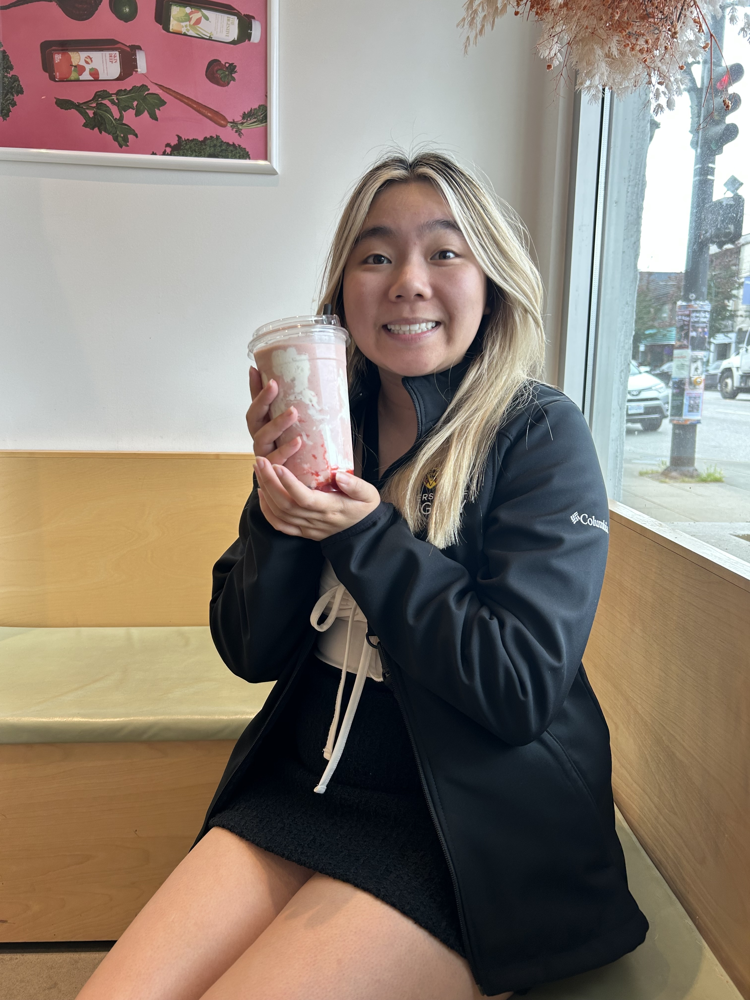
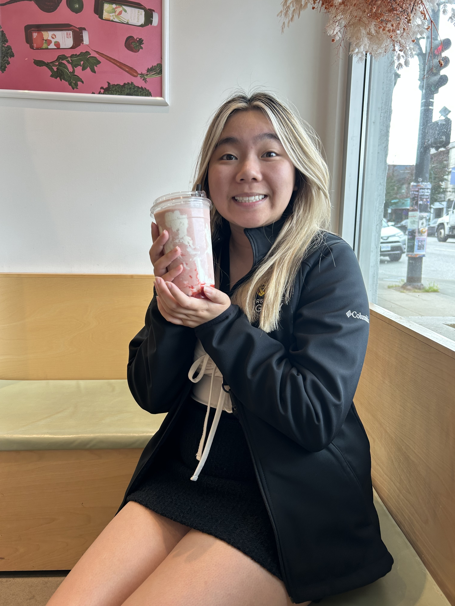

About Me
A Deeper Dive Into Who I Am
Who Am I?
My name is Emma Ly, and I’m a fourth-year concurrent Kinesiology and Education major at the University of Calgary. I decided to become a teacher because I had incredible teachers growing up, many of whom I’m still connected with today. These teachers taught me the value of creating safe classroom spaces, where students feel comfortable, welcomed, and know that they belong. I believe that it’s in these classrooms that students can thrive and build meaningful connections with those around them. Additionally, I also believe that teachers play an important role in modeling behaviours for students and showing them how to interact with the world around them. It can be easy to forget that students are constantly looking up to us and learning from everything we do, no matter how small. In this regard, I strive to be a positive role model for my students and to hold myself accountable when my actions are influenced by emotion or frustration.
With classrooms becoming increasingly complex and students needing more individualized support, I aim to use what I’ve learned in class to support my students and meet them where they are. I’m a strong advocate for student autonomy and input. For example, I believe that working with students to create shared classroom expectations, or giving them the freedom to choose how they want to approach projects, empowers them to actively engage with their learning. This allows students to feel respected and to take ownership of their learning. I also believe that all students should be given the same opportunities to grow, learn, and flourish both socially and academically. What works for one student may not work for another, and I’m always open to working directly with students to find learning strategies and tools that they can genuinely connect with.
In my free time, I enjoy playing various sports and being active. I love playing volleyball, and I try to hike often during the summer. As a kinesiology major, I believe physical activity is one of the most important things that people can engage in. So, I try to be as active as I can! Outside of sports, I’m an avid lover of travelling and sitcoms!. My favourite shows are Modern Family , The Good Place , and Parks and Recreation. I would love to connect with students and staff through any of my interests!

 

My Teaching Philosophy
I believe that students learn best when they feel a strong sense of community and belonging in the classroom. When students know they are valued, respected, and supported, they feel safe to take risks, ask questions, and engage deeply with learning. Ultimately, when students feel they belong and are part of a supportive community, they are more likely to embrace challenges, explore ideas, and reach their full potential.
Teaching Wellbeing
For my wellbeing as a teacher, I schedule daily check-ins to reflect on how I’m feeling. Additionally, since burnout is common in teaching, I make it a priority to balance work and personal life by engaging in activities I enjoy, such as playing sports and spending time with friends. I try to play sports or connect with friends on a weekly basis.